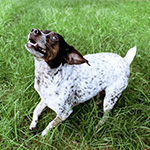
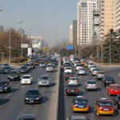
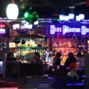
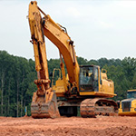
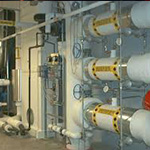
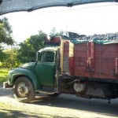

Noise Laws
This page provides a summary of the laws and standards that apply to common sources of urban noise in San Francisco. Article 29 of the San Francisco Police Code, also known as the San Francisco Noise Ordinance, is the source of most of these laws and standards.
Important definitions:

Animals |

Motor Vehicles |

Entertainment |

Construction |

Mechanical Equipment |

Sanitation and Public Works |
Animals
Animal noises are not specifically regulated under city law. However, under Section 2916, the Chief of Police can regulate and enforce against any source of noise not regulated under specific provisions of the San Francisco Noise Ordinance.
Motor Vehicles
Street Cleaning Equipment is not specifically regulated under the San Francisco Noise Ordinance. However, the Department of Public Works is responsible for the maintainance and operation of street cleaning vehicles and equipment.
Automobile Alarms are not regulated under the San Francisco Noise Ordinance. However, under Section 2916, the Chief of Police can regulate and enforce against any source of noise not regulated under specifc provisions of the San Francisco Noise Ordinance.
Automobile Music is regulated under Section 27000-27007 of the Vehicle Code by the San Francisco Police Department. Sound amplification systems in vehicles should not be heard from 50 feet away. This applies at all hours.
Automobile Exhaust is regulated under the California Motor Vehicle Code by the San Francisco Police Department. All modern vehicles have been standardized to an allowable limit of 80 dBA (measured from 50 feet away), but full regulations can be found below.
| Gross Vehicle Weight Rating (Pounds) | Date of Manufacture | |||||
|---|---|---|---|---|---|---|
| 1968 to 1972 | 1973 to 1974 | 1975 to 1977 | 1978 to 1981 | 1982 to 1987 | After 1987 | |
| Under 6,000 (except motorcycles and other specified vehicles) | 86 dBA | 84 dBA | 80 dBA | 80 dBA | 80 dBA | 80 dBA |
| Between 6,000 and 8,500 | 88 dBA | 86 dBA | 83 dBA | 80 dBA | 80 dBA | 80 dBA |
| Between 8,500 and 10,000 | 88 dBA | 86 dBA | 83 dBA | 83 dBA | 80 dBA | 80 dBA |
| Over 10,000 | 88 dBA | 86 dBA | 83 dBA | 83 dBA | 83 dBA | 80 dBA |
Information taken from Sections 27204 and 27206 of the California Motor Vehicle Code.
Most cars fall under 6,000 pounds. Vehicles which are above are trucks and some SUVs.
Noise is meant to be measured from 50 feet away.
Motorcycle Exhaust is regulated under the California Motor Vehicle Code by the San Francisco Police Department. No motorcycle may have exhaust systems modified to exceed allowed noise limits.
| Motorcycle Date of Manufacture | ||||
|---|---|---|---|---|
| Before 1970 | 1970 to 1972 | 1973 to 1974 | 1975 to 1985 | After 1985 |
| 92 dBA | 88 dBA | 86 dBA | 83 dBA | 80 dBA |
Information taken from Sections 27201 and 27202 of the California Motor Vehicle Code.
Noise is meant to be measured from 50 feet away.
Noise from Municipal Railways Vehicles are not regulated under local law. City agencies do purchase railway vehicles, maintain the rail track, and control the location, timing, and operation of vehicles.
Tour Buses are regulated under Section 2913 San Francisco Noise Ordinance by the San Francisco Police Department. At maximum level noise should not be audible 50 feet away from the vehicle.
Entertainment
Noise from Bars is regulated under Section 2909 of the San Francisco Noise Ordinance by the Department of Public Health and San Francisco Entertainment Commission. Allowable levels are no more than 8 dBA or 8 dBC above the ambient noise levels.
Noise from Nightclubs is regulated under Section 2909 of the San Francisco Noise Ordinance by the Department of Public Health and San Francisco Entertainment Commission. Allowable levels are no more than 8 dBA or 8 dBC above the ambient noise levels.
Amplified Sound Equipment is regulated under Section 2909 of the San Francisco Noise Ordinance by the Department of Public Health. Allowable levels are no more than 8 dBA or 8 dBC above the ambient noise levels.
Construction
Construction Activities is regulated under Section 2908 of the San Francisco Noise Ordinance by the Department of Building Inspection. Construction of public spaces is handled by the Department of Public Works. At night from 8:00 PM to 7:00 AM, noise levels cannot be over 5dBA over the ambient noise level when measured from any point on the property line.
Construction Equipment is regulated under Section 2907 of the San Francisco Noise Ordinance by the Department of Building Inspection. Equipment cannont produce sound levels greater than 80dBA at a distance of 100 feet from the equipment. Construction equipment can only be used after 8 PM or before 7AM if it also meets the more stringent evening and nighttime requirements under Construction Activities above.
Mechanical Equipment
Generators are regulated under Section 2909 of the San Francisco Noise Ordinance by the Department of Public Health. They cannot operate in a commerical use if they produce sound levels of 8dBA over the ambient level when measured at the property line of the commerical use. They cannot operate in a residential use if they produce sound levels 5 dBA over the ambient level when measured at the property line of the residential use.
Heating Ventilation and Air Conditioning (HVAC) Systems are regulated under Section 2909 of the San Francisco Noise Ordinance by the Department of Public Health. They cannot operate in a commerical use if they produce sound levels of 8dBA over the ambient level when measured at the property line of the commerical use. They cannot operate in a residential use if they produce sound levels 5 dBA over the ambient level when measured at the property line of the residential use.
Refrigeration Systems are regulated under Section 2909 of the San Francisco Noise Ordinance by the Department of Public Health. They cannot operate in a commerical use if they produce sound levels of 8dBA over the ambient level when measured at the property line of the commerical use. They cannot operate in a residential use if they produce sound levels 5 dBA over the ambient level when measured at the property line of the residential use.
Garbage Compactors are regulated under Section 2909 of the San Francisco Noise Ordinance by the Department of Public Health. They cannot operate in a commerical use if they produce sound levels of 8dBA over the ambient level when measured at the property line of the commerical use. They cannot operate in a residential use if they produce sound levels 5 dBA over the ambient level when measured at the property line of the residential use.
Sanitation and Public Works
Garbage Collection is regulated under Section 2904 of the San Francisco Noise Ordinance by the Department of Public Health. The mechanical processing system of garbage trucks (not the actual noise of moving garbage) cannot exceed 75 dBA from 50 feet away.
Noise from Sewer Covers is not regulated. The San Francisco Public Utilities Commission maintains the sewer system including covers.
Construction on behalf of the government follows the same rules as general construction. It is regulated under Section 2908 of the San Francisco Noise Ordinance by the Department of Public Works. Between 8:00PM and 7:00AM allowable levels are under 5dBA over the ambient noise level when measured from the property line.